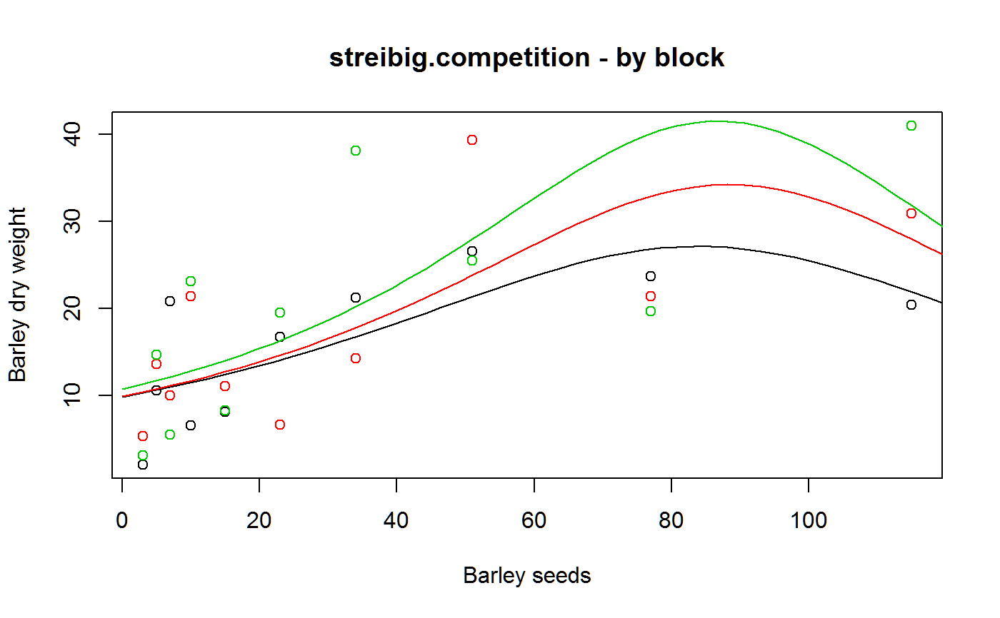

Competition experiment between barley and sinapis.
streibig.competition.RdCompetition experiment between barley and sinapis, at different planting rates.
Format
A data frame with 135 observations on the following 8 variables.
potpot number
bseedsbarley seeds sown
sseedssinapis seeds sown
blockblock
bfwtbarley fresh weight
sfwtsinapis fresh weight
bdwtbarley dry weight
sdwtsinapis dry weight
Details
The source data (in McCullagh) also contains a count of plants harvested (not included here) that sometimes is greater than the number of seeds planted.
Used with permission of Jens Streibig.
Source
Peter McCullagh, John A. Nelder. Generalized Linear Models, page 318-320.
References
Oliver Schabenberger and Francis J Pierce. 2002. Contemporary Statistical Models for the Plant and Soil Sciences. CRC Press. Page 370-375.
Examples
# \dontrun{ library(agridat) data(streibig.competition) dat <- streibig.competition # See Schaberger and Pierce, pages 370+ # Consider only the mono-species barley data (no competition from sinapis) d1 <- subset(dat, sseeds<1) d1 <- transform(d1, x=bseeds, y=bdwt, block=factor(block)) # Inverse yield looks like it will be a good fit for Gamma's inverse link libs(lattice) xyplot(1/y~x, data=d1, group=block, auto.key=list(columns=3), xlab="Seeding rate", ylab="Inverse yield of barley dry weight", main="streibig.competition")# linear predictor is quadratic, with separate intercept and slope per block m1 <- glm(y ~ block + block:x + x+I(x^2), data=d1, family=Gamma(link="inverse")) # Predict and plot newdf <- expand.grid(x=seq(0,120,length=50), block=factor(c('B1','B2','B3')) ) newdf$pred <- predict(m1, new=newdf, type='response') plot(y~x, data=d1, col=block, main="streibig.competition - by block", xlab="Barley seeds", ylab="Barley dry weight")for(bb in 1:3){ newbb <- subset(newdf, block==c('B1','B2','B3')[bb]) lines(pred~x, data=newbb, col=bb) }# }